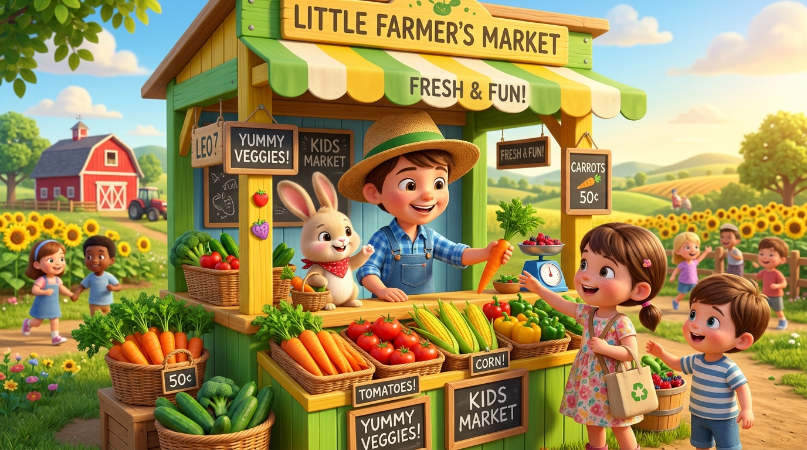

Ayo Bantu Pak Tani di Pasar Sayur Mini!
Belajar Penjumlahan Bilangan sampai 100 dengan Teknik Menyimpan jadi sangat mudah! Kemas wortel segar, simpan keranjang puluhan, layani pelanggan pasar yang lucu, dan jadilah Juara Bintang Pasar Sayur!

Profil Kasir Cilik
Masukkan namamu agar tertulis di Sertifikat Juara:
Pilih Wahana Pembelajaran
Semua modul dirancang khusus dengan visual konkret dan suara ramah anak kelas 2 SD.
CP & Tujuan Belajar
Pelajari target capaian Kurikulum Merdeka dan pedoman belajar mandiri yang jelas.
Materi Interaktif
Animasi manipulatif sayuran, pemahaman nilai tempat, dan lab simulasi menyimpan.
Game Kasir Pasar
Mainkan 3 level tantangan berbelanja sayur, kemas satuan jadi puluhan, dan kumpulkan koin!
Kuis & Sertifikat
Uji kemampuanmu lewat 10 tantangan seru dan dapatkan Sertifikat Juara Resmi berhias bintang!
Capaian & Tujuan Pembelajaran
Pedoman panduan belajar resmi mata pelajaran Matematika Elemen Bilangan untuk guru, siswa, dan orang tua.
Elemen Bilangan - Fase A
Pada akhir Fase A, peserta didik menunjukkan pemahaman dan memiliki intuisi bilangan (number sense) pada bilangan cacah sampai 100. Peserta didik dapat:
- Membaca, menulis, dan menentukan nilai tempat (puluhan dan satuan) bilangan cacah sampai 100.
- Melakukan operasi penjumlahan dua bilangan cacah sampai 100 dengan dan tanpa teknik menyimpan.
- Menggunakan benda konkret, gambar manipulatif, serta simbol matematika untuk menyelesaikan masalah kontekstual sehari-hari.
Target Khusus Pembelajaran
Melalui konteks "Pasar Sayur Mini", setelah mengikuti aktivitas gamifikasi ini, peserta didik diharapkan mampu:
- TP 1: Memodelkan bilangan dua angka menjadi kumpulan keranjang puluhan dan sayur satuan secara tepat.
- TP 2: Mengonstruksi pemahaman konsep teknik menyimpan bahwa 10 sayur satuan harus dikelompokkan menjadi 1 puluhan.
- TP 3: Menghitung hasil penjumlahan bilangan cacah sampai 100 dengan teknik menyimpan menggunakan cara bersusun panjang dan bersusun pendek secara mandiri.
- TP 4: Menyelesaikan persoalan cerita transaksi di pasar sayur dengan penalaran kritis dan tepat.
🇮🇩 Penguatan Profil Pelajar Pancasila
Karakter luhur yang dikembangkan selama proses pembelajaran dengan media ini:
Bernalar Kritis
Menganalisis mengapa satuan yang berjumlah 10 atau lebih harus dikonversi menjadi 1 puluhan baru.
Mandiri
Berani mencoba simulasi, menghitung hasil belanja kasir, serta menyelesaikan kuis evaluasi sendiri.
Gotong Royong
Membantu Pak Tani dan rekan belajar dalam melayani pembeli sayur dengan ramah dan jujur.
💡 Petunjuk Penggunaan bagi Guru & Orang Tua
- Ajak siswa membuka menu Materi Interaktif untuk mencoba simulasi pengikatan 10 sayuran menjadi keranjang puluhan.
- Gunakan tombol 🔊 Dengarkan agar siswa yang masih dalam tahap membaca permulaan dapat mendengarkan penjelasan audio.
- Bimbing siswa bermain di Game Kasir Pasar secara bertahap dari Level 1 hingga Level 3.
- Akhiri kegiatan dengan mengerjakan Kuis Juara untuk mencetak Sertifikat Penghargaan resmi bagi siswa!
Materi Penjumlahan Teknik Menyimpan
Yuk pelajari rahasia penjumlahan menyimpan dengan melihat langsung perubahan wortel satuan menjadi keranjang puluhan!
Tahap 1: Mengenal Puluhan dan Satuan di Pasar
Agar Pak Tani tidak repot menghitung sayuran satu per satu, Pak Tani mengemasnya dengan aturan pintar:
1 Sayur Lepas = 1 Satuan
Sayuran yang berdiri sendiri bernilai 1 satuan. Jika ada 7 wortel lepas, nilainya adalah 7.
1 Keranjang Sayur = 1 Puluhan (10)
Setiap 10 sayur lepas dimasukkan ke dalam 1 keranjang rapi, bernilai 1 puluhan = 10.
Contoh Bilangan 24 = 🧺🧺 (2 Keranjang Puluhan = 20) + 🥕🥕🥕🥕 (4 Wortel Satuan = 4).
Kasir Pasar Sayur Mini
Bantu Pak Tani melayani pesanan pembeli! Kemas 10 sayur satuan menjadi 1 keranjang puluhan baru dan hitung total harganya!
"Halo! Saya ingin membeli 15 wortel dan 7 wortel lagi untuk keluarga kelinci!"
Berapa total seluruh sayur pesanan pembeli? Klik kartu jawaban:
⌨️ Ingin Mengetik Angka Puluhan & Satuan Sendiri? (Klik di sini)
Kuis Tantangan Juara Pasar
Jawab 10 soal cerita dan tantangan berhitung untuk mendapatkan Sertifikat Bintang Matematika Pasar Sayur Mini!
Siap Menjadi Juara Pasar Sayur? 🥕🏆
Sebelum memulai 10 soal tantangan penjumlahan teknik menyimpan, tuliskan nama lengkap dan kelasmu ya! Namamu akan tercetak resmi di Sertifikat Juara Bintang Pasar Sayur!
Selamat! Kamu Telah Menyelesaikan Kuis!
Hebat sekali, kamu telah berjuang menyelesaikan semua tantangan berhitung di Pasar Sayur Mini!
Juara Bintang Pasar Sayur 🥕👑
SERTIFIKAT PENGHARGAAN
Diberikan dengan penuh rasa bangga kepada:
Telah berhasil dan cakap menguasai materi Penjumlahan Bilangan sampai 100 dengan Teknik Menyimpan melalui media simulasi interaktif Pasar Sayur Mini dengan perolehan nilai: 100/100.